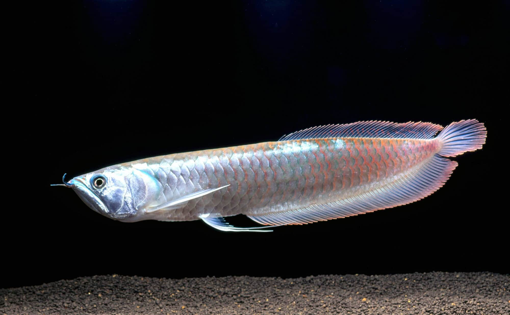
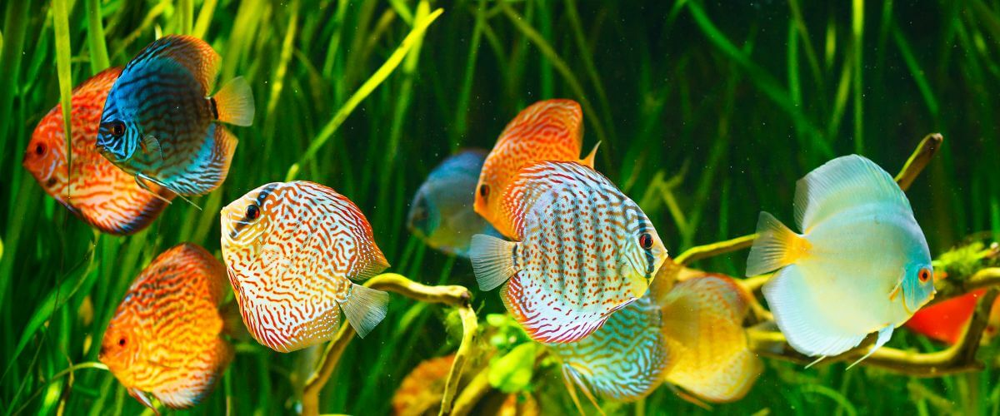
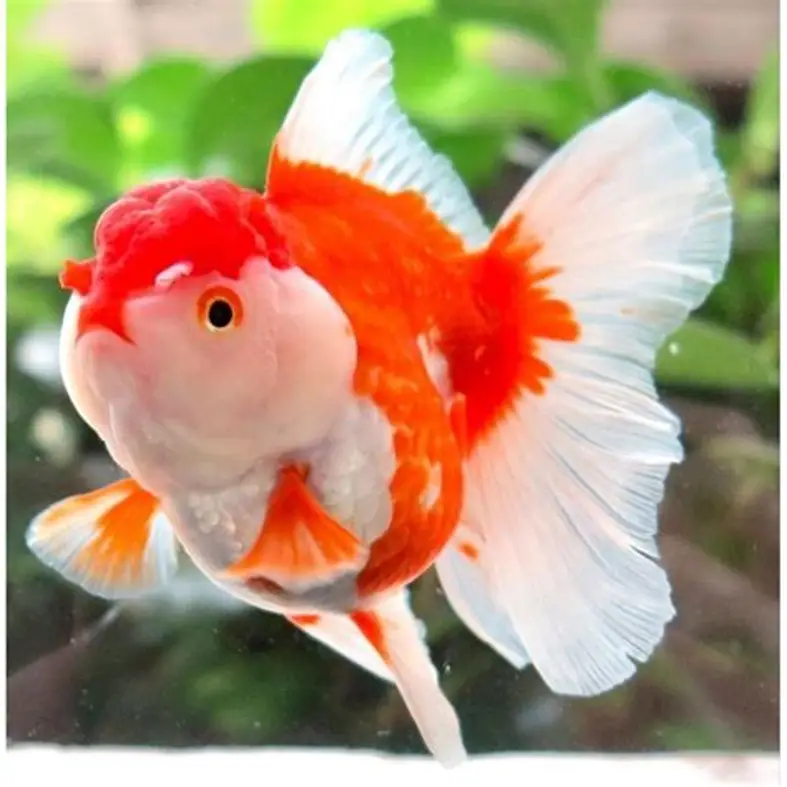

Bienvenidos a Mundo de los Peces
Mundo de los Peces nace con la idea de compartir información sobre el fascinante mundo de los acuarios y las diferentes especies de peces. Nuestro objetivo es ayudar a las personas a conocer sus cuidados, alimentación, compatibilidad y las condiciones necesarias para mantener un acuario saludable.
Conoce nuestras especies
En Mundo de los Peces encontrarás información sobre peces orientales como los Goldfish y Koi, además de diferentes especies tropicales. También aprenderás sobre sus características, necesidades y compatibilidad con otros peces.
Nuestros servicios
En Mundo de los Peces ofrecemos información y orientación para el cuidado adecuado de los peces y acuarios.
- Cuidados y alimentación de peces
- Compatibilidad entre especies
- Mantenimiento de acuarios
Conoce nuestros peces
Descubre algunas de las especies más populares del mundo de los acuarios.
Galería de Mundo de los Peces
Conoce algunas de las especies de peces ornamentales y descubre la belleza del mundo de los acuarios.



Preguntas frecuentes
Encuentra respuestas a algunas de las preguntas más comunes sobre el cuidado de los peces y acuarios.
La frecuencia depende de la especie y su edad. Muchos peces adultos pueden alimentarse una o dos veces al día, utilizando porciones adecuadas.
En muchos acuarios se realizan cambios parciales de agua semanalmente. La cantidad depende de la población, la filtración y la calidad del agua.
Sí, siempre que las especies sean compatibles en comportamiento, temperatura, tamaño y necesidades de agua.
El filtro ayuda a retirar partículas del agua y permite alojar bacterias beneficiosas que procesan sustancias tóxicas producidas en el acuario.